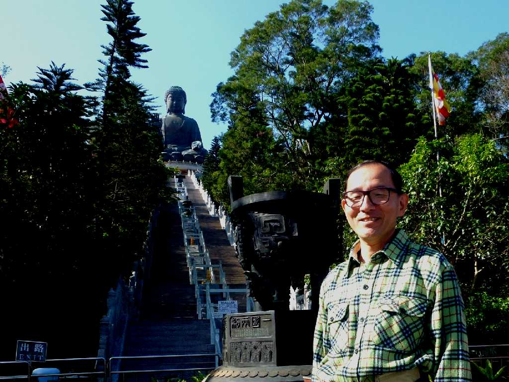
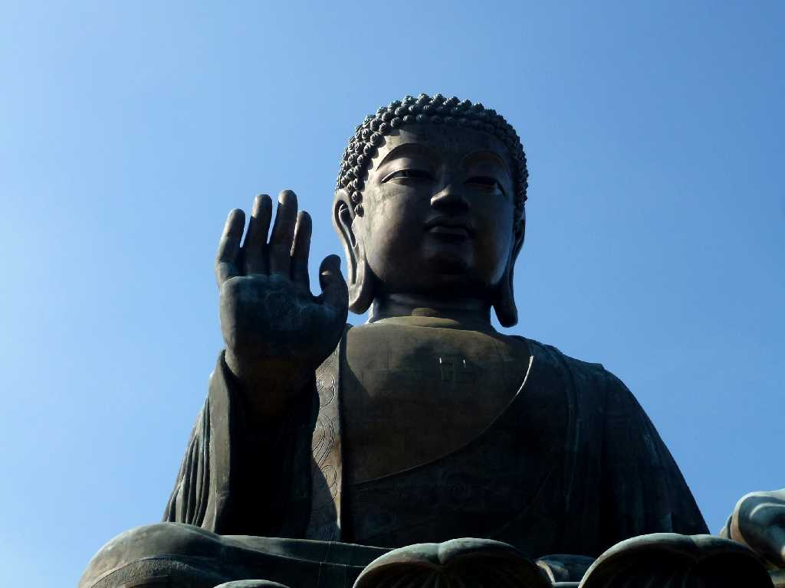
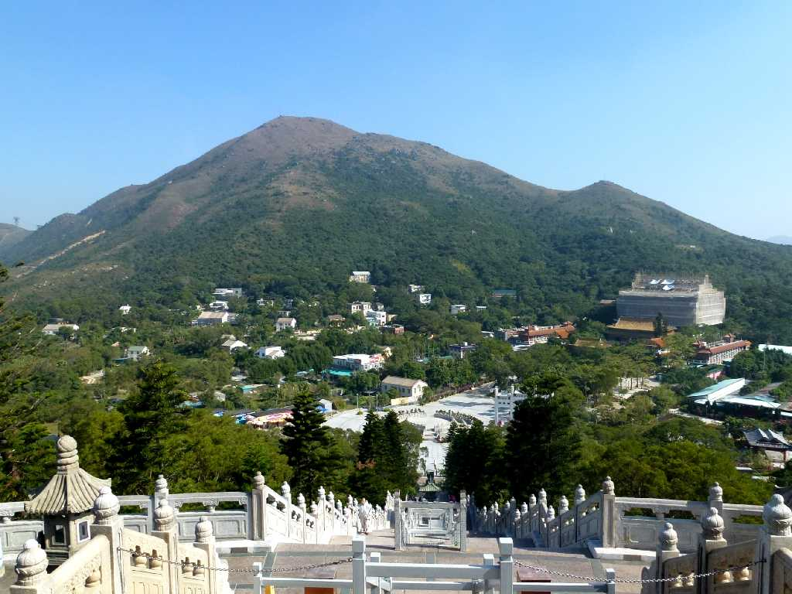
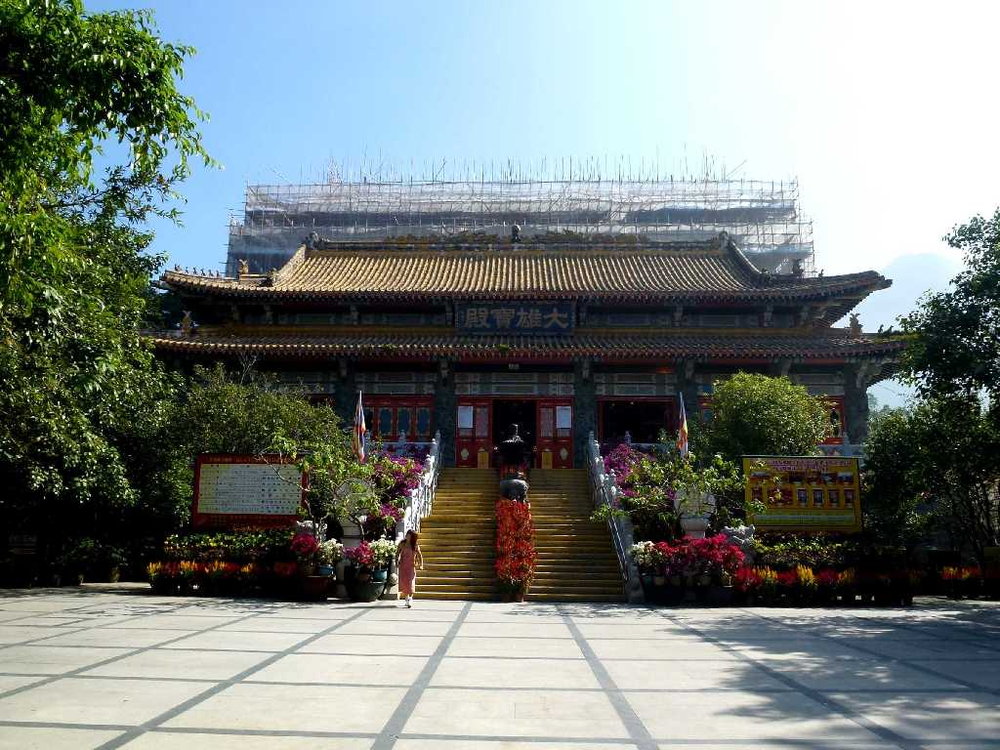
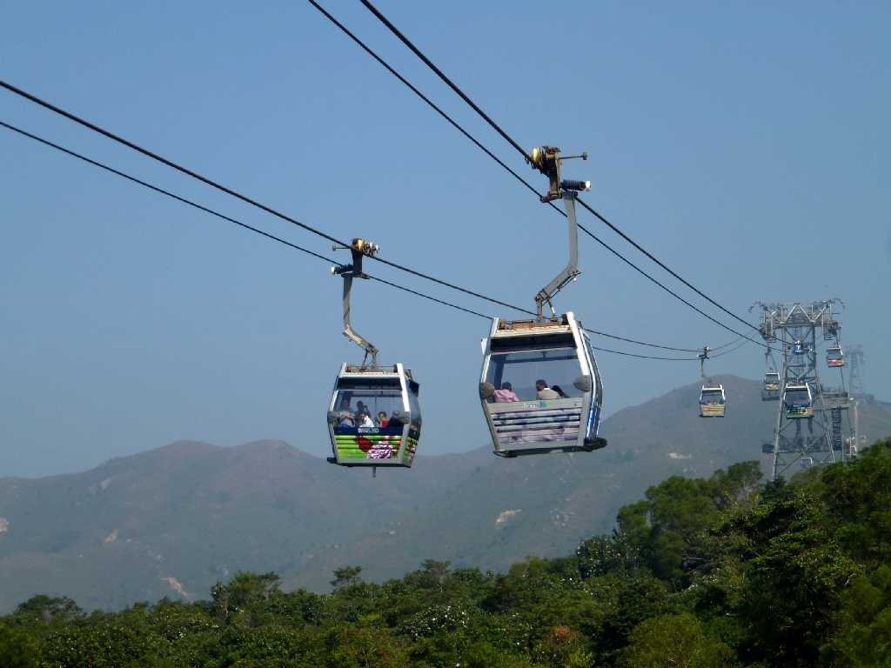

Tian Tan Buddha Lantau Island Hong Kong 香港 大嶼山 天壇大仏
世界最大の屋外座禅銅大仏と云われる天壇大仏

November 13 2012 Tian Tan Buddha
１９８９年に創られた高さ３４ｍの大仏の顔は龍門石窟の盧遮那仏を衣紋は敦煌石窟の釈迦牟尼像を参考にしたもの

Tian Tan Buddha
大仏は全跏と云われるお釈迦様が菩提樹の下で修行し悟ったときの座り方をしている

Po Lin Monastery from Tian Tan Buddha

Po Lin Monastery 寶蓮寺
１９２４年に創られた寶蓮寺は南天仏国と呼ばれ香港四大禅林の中で一番有名な寺とされている

Ngong Ping 360 昂坪360